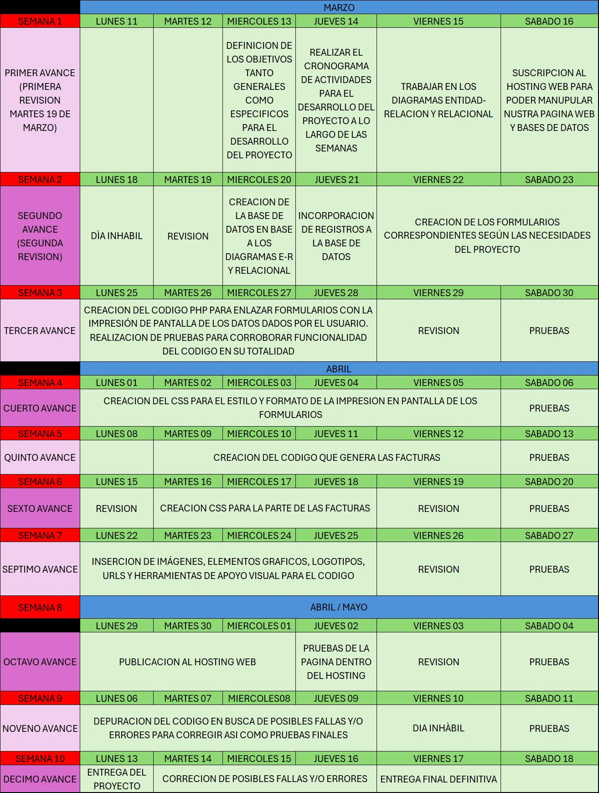
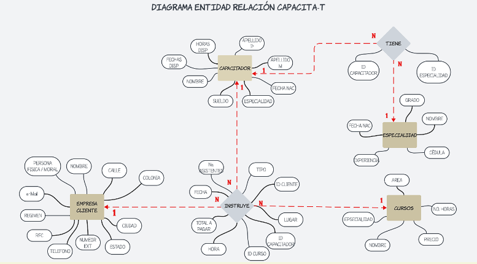
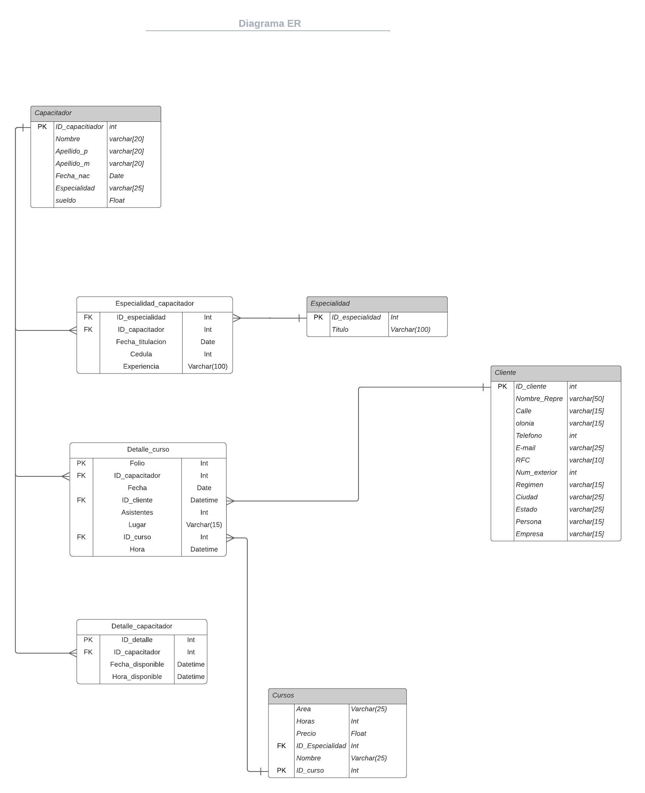

Primer Avance del Proyecto Final
OBJETIVOS GENERALES:
- Desarrollar una aplicación web para la gestión eficiente de capacitadores, cursos y clientes, a fin de maximizar la oferta de sesiones de capacitación semanalmente.
- Implementar un sistema que permita asignar capacitadores de manera óptima a las sesiones de capacitación, considerando las restricciones de disponibilidad y conocimientos de cada uno.
- Facilitar la generación de facturas para las empresas clientes y calcular los pagos correspondientes a los capacitadores por los cursos impartidos.
- Proporcionar a la empresa capacitadora, a los capacitadores y a las empresas clientes acceso a un plan de capacitaciones semanal o mensual.
- Ofrecer opciones de gestión de datos (alta, baja, edición y consulta) tanto para empresas clientes como para capacitadores, con filtros para una búsqueda más eficiente.
OBJETIVOS ESPECIFICOS:
- Desarrollar un módulo de alta de capacitadores, incluyendo información relevante como áreas de experiencia y disponibilidad semanal.
- Implementar un sistema de alta de empresas clientes, recopilando información como nombre, contacto y áreas de interés en capacitación.
- Diseñar un proceso de alta de cursos ofertados, permitiendo especificar costos, horarios disponibles y capacitadores asignados.
- Crear un algoritmo de asignación de capacitadores a sesiones de manera óptima, maximizando la cantidad total de sesiones ofrecidas por semana.
- Desarrollar un sistema de generación de facturas automáticas para las empresas clientes, basado en las sesiones de capacitación impartidas.
- Implementar un proceso para calcular los pagos mensuales a cada capacitador, teniendo en cuenta los cursos impartidos y los costos establecidos.
- Diseñar una interfaz para consultar el plan de capacitaciones semanal o mensual, permitiendo filtrar por diferentes criterios según sea necesario.
- Desarrollar opciones de gestión de empresas clientes, incluyendo alta, baja, edición y consulta de datos, con la posibilidad de aplicar filtros para una búsqueda específica.
- Crear funcionalidades similares para la gestión de capacitadores, permitiendo realizar operaciones como alta, baja, edición y consulta de datos con y sin filtros.
- Implementar un sistema de consulta de pagos mensuales para los capacitadores, proporcionando información detallada sobre los cursos impartidos y los montos a pagar.
Cronograma de Actividades
Diagrama Entidad-Relación
Diagrama Relacional
Mapa de Sitio